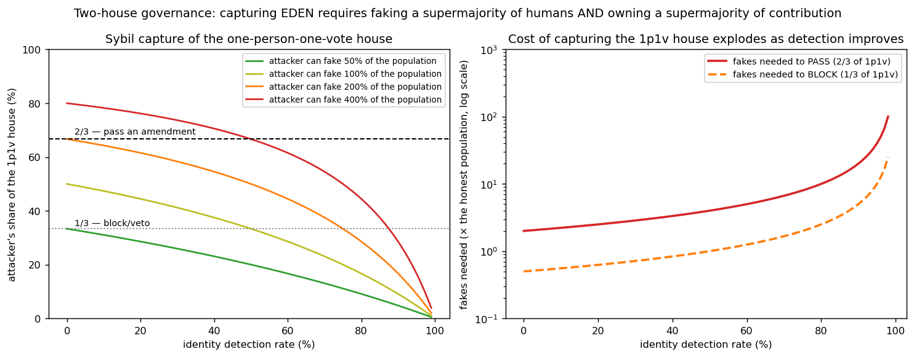

In plain language
Companion to RESULTS - Governance Capture. Companion added July 11, 2026 — the v1–v5-era runs predate the plain-language convention; written from the committed RESULTS as it stands today (including any verification-pass corrections already applied in that file), with no reinterpretation.
The question
The adversarial stress test found that EDEN's economics tolerate identity failure but its governance is where sybils bite. This run quantifies that: how expensive is it, in numbers, to capture EDEN's constitution — and does the two-house design actually earn its keep?
What we found
Amending the constitution takes a 2/3 supermajority in two houses plus a 24-month timelock — and each house covers the other's weakness. The one-person-one-vote house falls only to sybils, and the cost explodes with identity detection: at 90% of fakes caught, passing an amendment means fielding fakes equal to 20× the entire honest population; at 99%, 200× (blocking at 1/3 is cheaper but scales the same way). The contribution-weighted house alone is plutocratically capturable: in an illustrative distribution where the top 10% hold ~55% of weight, a coalition of just 16.6% of holders reaches the 2/3 threshold (3.3% can block) — and under EDEN's actual concentration (v1 found the top 10% of creators capture ~84% of minting) it would be even easier. Requiring both houses converts an OR-vulnerability into an AND-requirement that one resource can't satisfy: wealth can't buy person-votes (a whale is still one human) and sybils carry ~no contribution weight (fakes did no work). The timelock is a real backstop on top: a capture attempt is publicly visible for two years, and with even a 10%-per-month chance of honest detection-and-response, a live capture survives only 8.0% of the time (61.6% at 2%/month, 29.2% at 5%).
The honest catch
The model's biggest soft spot is voter apathy: it assumes honest voters turn out, and if real turnout is low, the same number of fakes buys a larger vote share, lowering the capture bar — low participation is itself a governance risk worth modeling. It also assumes sybils hold ~zero contribution weight (a patient attacker could slowly build some), models the timelock response simply, and leaves out vote-buying and off-chain coordination. Detection quality itself — the hard personhood problem — is taken as given. Hence the run's practical advice: put the strongest identity guarantees on the voting layer (the economy tolerates weak identity; the vote does not), keep the two-house supermajority and long timelock, and consider bonded personhood for constitutional votes plus published live capture-risk metrics so the response can trigger early.
One line
Either house of EDEN's governance can be captured alone — sybils take the person-vote house if identity is weak, and a ~17% wealthy coalition takes the weighted house — but taking both at once means being a population-scale sybil farm that also owns two-thirds of all real contribution, and then surviving two years in public view.
Words used here (added July 18, 2026 — plain-language house rule; the text above is unchanged). Capture — an attacker gaining control of a mechanism from inside its own rules — here, the constitution itself. Sybil — one person pretending to be many accounts; in a vote, fake people are fake votes. Supermajority (2/3) — a bar well above half — two of every three votes — so a bare majority can't rewrite the rules. Timelock — a mandatory waiting period (24 months here) between a vote passing and taking effect, leaving a capture attempt exposed in public view. Contribution-weighted house — the chamber where votes scale with verified work done rather than headcount. Plutocratic — rule by wealth; "plutocratically capturable" means money alone could buy the outcome there. Whale — a single holder of an outsized share; in the person-vote house a whale is still one human, one vote. Minting — the creation of new EVE by verified human engagement; "~84% of minting" measures how concentrated earning is. Bonded personhood — backing the claim "I am one real human" with a posted deposit forfeited if you're caught faking.
Figures

Technical results
Follows directly from the adversarial test, which found EDEN's economics tolerate identity failure but its governance is where sybils bite. This quantifies that — and shows why the two-house design is the answer. Files in this folder.
The setup
EDEN's constitution can only be changed by a supermajority of two houses plus a long timelock:
- a one-person-one-vote house (gated by proof-of-personhood) — vulnerable to sybils (fake identities = fake votes);
- a contribution-weighted house — vulnerable to wealth/contribution concentration (a whale coalition).
The crucial asymmetry: sybils have ~no contribution weight (they did no real work), so they help only the 1p1v house; and a whale is still one human, so wealth helps only the weighted house. To pass a constitutional amendment an attacker must clear the supermajority in both — simultaneously faking a supermajority of humans and owning a supermajority of contribution. Thresholds: 1/3 to block/veto, 2/3 to amend.
Result 1 — Capturing the one-person-one-vote house gets astronomically expensive with detection
Fakes an attacker must field, as a multiple of the entire honest population, to capture the 1p1v house:
| Identity detection | To block (1/3) | To pass an amendment (2/3) |
|---|---|---|
| 50% of fakes caught | 1× the population | 4× the population |
| 90% caught | 5× | 20× |
| 95% caught | 10× | 40× |
| 99% caught | 50× | 200× |
At strong detection, passing an amendment through the 1p1v house alone requires faking 20–200× the entire honest population — and the cost explodes as detection improves (fig_governance.png, right panel, log scale). This is the quantified version of the adversarial test's headline: identity integrity matters most here, in the vote.
Result 2 — The weighted house alone is plutocratically capturable
In an illustrative contribution distribution where the top 10% hold ~55% of weight, a coalition of just 16.6% of holders reaches the 2/3 amendment threshold (and 3.3% can block). Under EDEN's actual concentration (v1 found the top 10% of creators capture ~84% of minting), the weighted house would be even easier to capture. So a single contribution-weighted chamber — like a token-weighted DAO — is wide open to a wealthy coalition. That is precisely the failure the 1p1v house exists to prevent.
Result 3 — The two-house design converts an OR-vulnerability into an AND-requirement
- A single token-weighted DAO is captured by ~17% of holders (a whale coalition).
- A single one-person-one-vote DAO is captured by a sybil farm if identity is weak.
- EDEN requires both at once — and the two requirements can't be met by the same resource: wealth can't buy 1p1v votes (a whale is one person), and sybils can't supply contribution weight (fakes did no work). An attacker would need to be simultaneously a population-scale sybil farm and the owner of two-thirds of all real contribution. The houses cover each other's weakness; that mutual coverage is the design's core security property, and it holds quantitatively.
Result 4 — The timelock is a real backstop
A 24-month timelock means any capture attempt is publicly visible for two years before it takes effect. If honest participants have even a modest monthly chance of detecting and responding (boosting detection, slashing bonded fakes, forking, or mobilizing votes), a live capture is unlikely to survive:
| Monthly honest-response probability | Chance the capture survives 24 months |
|---|---|
| 2% / month | 61.6% |
| 5% / month | 29.2% |
| 10% / month | 8.0% |
Transparency (the white-box ledger) is what makes that response possible — every fake vote and every large weight shift is visible.
What to do with it
- Put the strongest identity guarantees on the voting layer, not the economy. The adversarial model showed the economy tolerates weak identity; this shows the vote does not. Detection quality for governance is the binding constraint.
- Keep the two-house supermajority + long timelock for constitutional changes — it is doing the heavy lifting, and removing either house collapses security to the weaker single-house case.
- Consider bonding/escalating personhood-strength for constitutional votes specifically, and publishing live capture-risk metrics (sybil-rate estimates, weight concentration) so the timelock response can trigger early.
Honest limits
This is a stylized, mostly analytic model. It assumes honest voters turn out — its biggest soft spot is voter apathy: if real turnout is low, the attacker's vote share rises for the same number of fakes, lowering the capture bar (low participation is itself a governance risk worth modeling). It assumes sybils carry ~zero contribution weight (a patient attacker could slowly build some), models the timelock response simply, and does not model vote-buying/bribery of honest voters or off-chain coordination. Detection quality itself — the hard ML/crypto personhood problem — is exogenous here, as in the adversarial model. Audience: crypto reviewers and governance designers.
Files
governance_sim.py— the two-house capture model, thresholds, and timelockfig_governance.png— sybil vote share vs detection; cost of capture exploding with detectionresults_governance.json— all thresholds and figures
Raw data